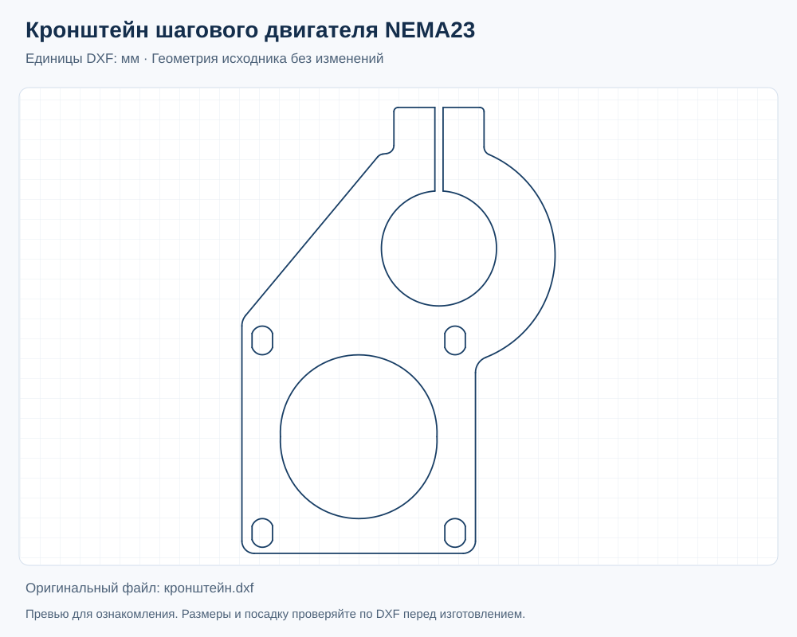
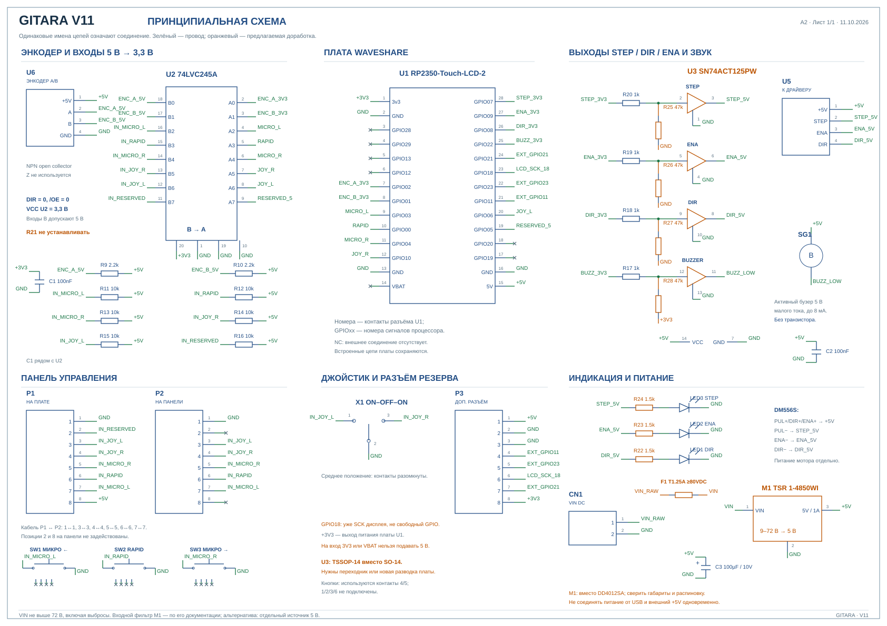
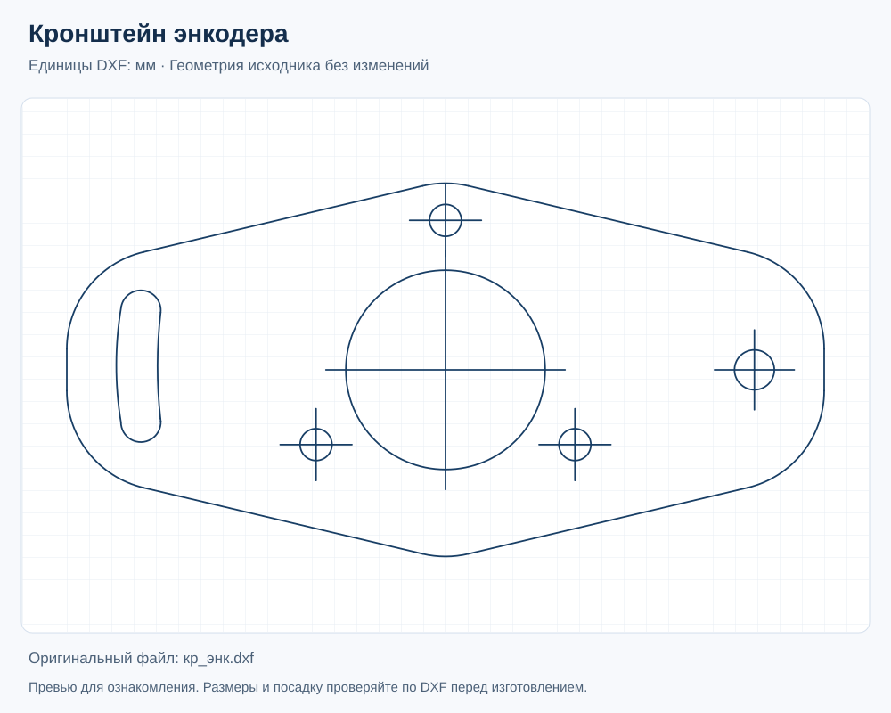

V11 · ВИРТУАЛЬНЫЙ ПРИБОР
Попробуйте меню.
Станок не нужен.
Нажимайте кнопки на экране, настраивайте механику и пробуйте подачу с виртуальным шпинделем.
Начните с AFEED
Выберите режим на экране и переведите джойстик влево или вправо. Каретка начнёт двигаться.
Мышь и сенсорный экранGITARA — Electronic Lead Screw (ELS), электронная гитара для токарного станка. Электронные шестерни связывают продольную подачу с вращением шпинделя: нарезание и восстановление правой и левой резьбы, синхронная и независимая подача, перемещение STEP и делилка. Прибор собирается на Waveshare RP2350-Touch-LCD-2.
GITARAV11 / WEB
ПОЛНЫЙ ОБЗОР МЕНЮ
ПРОДОЛЬНАЯ ОСЬ0,00 мм
+250−25 мм
L
R
Каретка стоит
Микроподача и RAPID действуют при удержании. RAPID больше 1 секунды в нейтрали обнуляет DRO и снимает лимиты; в DIVIDER обнуляет угол.
Выберите режим на экране прибора.
Как пользоваться
01 / ЭкранВсе меню открываются кнопками прибора. Для BF держите кнопку 1,2 секунды, для лимитов L/R — 2,2 секунды. Появится полоса удержания.
02 / ДвижениеFEED и THREAD следуют за шпинделем. AFEED и STEP работают независимо. Скорость FEED/AFEED можно менять на ходу; шаг THREAD/STEP — после остановки.
03 / НастройкаВ SETUP выберите строку и нажимайте −/+; удержание ускоряет изменение. SAVE сохраняет настройки только в этом браузере.
Плата прибора: Waveshare RP2350-Touch-LCD-2 ↗ · документация и распиновка ↗
СБОРКА СВОЕГО ПРИБОРА
Принципиальная схема
Один лист с номерами контактов: плата Waveshare RP2350-Touch-LCD-2, энкодер A/B, кнопки, джойстик, буферы, выходы на драйвер и питание. Соединения обозначены именами цепей, доработки выделены оранжевым.
Принципиальная схема · PDF ↗Редактируемая схема · EasyEDA JSON ↓Пояснения по подключению · PDF ↗Список деталей и контактов ↗
МЕХАНИКА
Чертежи кронштейнов
Файлы DXF в миллиметрах. Перед изготовлением проверьте посадочные размеры двигателя, энкодера и своего станка; материал и толщину выбирайте под свою сборку.

ПОЛНАЯ ВЕРСИЯ ПРИБОРА
Активация GITARA
Постоянный код для одной платы. Все шаги резьбы и подачи, STEP и CYCLE открываются после ввода кода в REGISTER. Виртуальное меню на этой странице доступно полностью.
$10за одну плату
- Сначала проверьте приборУстановите прошивку и попробуйте деморежим: AFEED, DIVIDER, FEED 0,10 мм/об и резьбу 1,00 мм.
- Пришлите DEVICE IDОткройте SETUP → REGISTER и отправьте ID платы на dmitriynet@proton.me. До перевода согласуйте сумму в USDT.
- Оплатите и получите кодПосле перевода отправьте на ту же почту ID транзакции (TXID). Код выдаётся вручную после подтверждения оплаты; введите его в REGISTER.
USDT · BNB Smart Chain (BEP20)
Отправляйте USDT только в указанной сети. Комиссия кошелька оплачивается отдельно; другие монеты и сети для этой оплаты не используйте.